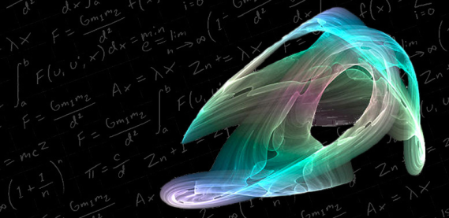

Research
Publications and research output
Working papers, software, journal articles, thesis supervision, funded projects, and institutional research profile in applied mathematics, tensor methods, topological data analysis, computational mechanics, and related fields.

Institutional profile
Antonio Falcó Montesinos
Full Professor in the Department of Mathematics, Physics and Technological Sciences at CEU Cardenal Herrera University. Research area: Applied Mathematics. Research group: XQBO Métodos computacionales para la modelización de procesos físicos.
Source: CEU research profile. Publication list updated from the CEU portal view retrieved on 15-08-2026.
- 117
- curated publications shown below
- 7
- supervised PhD theses
- 18
- funded projects and contracts since 2016
- €1,389,419
- funding recorded by the portal
Recent institutional output
- Publications profile: curated publication list based on the CEU portal, including 2026 works in AIMS Mathematics, Journal of Physics A: Mathematical and Theoretical, Alzheimer's and Dementia, Briefings in Bioinformatics, and Scientific Reports, plus 2025 works in Frontiers in Neural Circuits, International Journal of Molecular Sciences, IEEE Access, SoftwareX, Expert Opinion on Drug Discovery, and Journal of Nonlinear and Variational Analysis.
- Thesis profile: PhD in Mathematics from Universitat Autònoma de Barcelona, 1995, supervised by Dr. Lluís Alsedà Soler, plus 7 supervised theses and 15 thesis committee records.
- Funding profile: 18 funding records, including 2025 projects on augmented-data AI applications and digital-enabling technologies.
Selected Records
- On Minimal Subspaces in Tensor Representations Foundations of Computational Mathematics, 2012. Journal article. Contributors: Falco, Antonio; Hackbusch, Wolfgang. WOSUID: WOS:000310338700002. doi: 10.1007/s10208-012-9136-6
- On the Convergence of a Greedy Rank-One Update Algorithm for a Class of Linear Systems Archives of Computational Methods in Engineering, 2010. Journal article. Contributors: Ammar, A.; Chinesta, F.; Falco, A. WOSUID: ISI:000284330200009. doi: 10.1007/s11831-010-9048-z
- Proper generalized decomposition for nonlinear convex problems in tensor Banach spaces Numerische Mathematik, 2012. Journal article. Contributors: Falco, Antonio; Nouy, Anthony. WOSUID: WOS:000305219700005. doi: 10.1007/s00211-011-0437-5
- A Proper Generalized Decomposition for the solution of elliptic problems in abstract form by using a functional Eckart-Young approach Journal of Mathematical Analysis and Applications, 2011. Journal article. Contributors: Falcó, A.; Nouy, A. EID: 2-s2.0-78650698308. doi: 10.1016/j.jmaa.2010.12.003
- On the Dirac-Frenkel Variational Principle on Tensor Banach Spaces Foundations of Computational Mathematics, 2019. Journal article. Contributors: Falcó, A.; Hackbusch, W.; Nouy, A. EID: 2-s2.0-85040867726. doi: 10.1007/s10208-018-9381-4
Full publication list
Working Papers
- Alberto Acevedo, Antonio Falcó Finite-time quantum equilibration for continuous variables Arxiv arXiv:2412.00982v1 [quant-ph] (2024)
- Raquel Bosch-Romeu, Julián Librero, Marina Senent-Valero, Marı́a Carmen Sanfeliu-Alonso, José Marı́a Salinas-Serrano, Jaume Forés-Martos, Beatriz Suay-Garcı́a, Joan Climent , Antonio Falcó and Marı́a Pastor-Valero A novel approach to learning through categorical variables applicable to the classification of solitary pulmonary nodule malignancy Research Square (2022)
- Jaume Forés-Martos, Beatriz Suay-García, Raquel Bosch-Romeu, Maria Carmen Sanfeliu-Alonso, Antonio Falcó,Joan Climent Progression Analysis of Disease with Survival (PAD-S) by SurvMap identifies different prognostic subgroups of breast cancer in a large combined set of transcriptomics and methylation studies BioArxiV (2022)
- A. Falcó, W. Hackbusch and A. Nouy. Geometric Structures in Tensor Representations (Release 2). Preprint 56/2014 at Max Planck Institute for Mathematics in the Sciences (2014).
- A. Falcó, W. Hackbusch and A. Nouy. Geometric Structures in Tensor Representations. Preprint 9/2013 at Max Planck Institute for Mathematics in the Sciences (2013).
- E. Estellés Arolas, F. González Ladrón de Guevara and A. Falcó Montesinos. Principal Component Analysis for Automatic Tag Suggestion . Working Paper (2010).
- D. Santo-Orcero, C.R. Zacharias and A. Falcó. Fast matrix-vector multiplication for tight-binding hamiltonial matrices in the Lanczos method. Working Paper (2010).
- A. Nouy and A. Falcó. Constrained Tensor Product Approximations based on Penalized Best Approximations. Working Paper (2010).
Software
- Miriam Esteve, Raquel Bosch, Jaume Forés, Joan Climent, Antonio Falco. GSSTDA: Gene Structure Survival using Topological Data Analysis
Papers from the CEU Research Portal
Curated from the CEU Research Portal: 117 records after removing duplicate or misattributed entries; DOI links verified for 87 records. Each title links to its CEU record; DOI links are shown when available.
2026
- A rigorous and self-contained proof of the Grover-Rudolph state preparation algorithm AIMS Mathematics, Vol. 11, Núm. 6, pp. 16366-16394 doi: 10.3934/math.2026672
- Geometric complexity of quantum channels via unitary dilations Journal of Physics A: Mathematical and Theoretical, Vol. 59, Núm. 20 doi: 10.1088/1751-8121/ae6add
- Inference as the defining criterion of AI: rethinking the EU AI Ac Law, Innovation and Technology
- Polypharmacy is associated with lower progression from MCI to Alzheimer's disease, with sex-specific patterns across drug classes Alzheimer's and Dementia: Diagnosis, Assessment and Disease Monitoring, Vol. 18, Núm. 2 doi: 10.1002/dad2.70379
- Topological deep learning for drug–target interaction, virtual screening, and docking scoring: a practical, benchmark-driven review Briefings in Bioinformatics, Vol. 27, Núm. 4 doi: 10.1093/bib/bbag370
2025
- A comprehensive update on the use of molecular topology applications for anti-infective drug discovery Expert Opinion on Drug Discovery, Vol. 20, Núm. 4, pp. 465-474 doi: 10.1080/17460441.2025.2477625
- Evidence of spatial periodic firing in the subiculum of mice Frontiers in Neural Circuits, Vol. 19 doi: 10.3389/fncir.2025.1648844
- Prognostic Relevance of Clinical and Tumor Mutational Profile in High-Grade Serous Ovarian Cancer International Journal of Molecular Sciences, Vol. 26, Núm. 15 doi: 10.3390/ijms26157416
- Trajectory Classification Through Topological Data Analysis Perspectives IEEE Access, Vol. 13, pp. 32458-32469 doi: 10.1109/access.2025.3543111
- UNIVERSALITY FOR NON-LINEAR CONVEX VARIATIONAL PROBLEMS Journal of Nonlinear and Variational Analysis, Vol. 9, Núm. 2, pp. 161-177 doi: 10.23952/jnva.9.2025.2.01
- topoEEG: An Python-framework for analyzing EEG data in neurodegeneratives disease through Topological Deep Learning SoftwareX, Vol. 31 doi: 10.1016/j.softx.2025.102222
2024
- Analysis of the influence of educational level on the nutritional status and lifestyle habits of the young Spanish population Frontiers in Public Health, Vol. 12 doi: 10.3389/fpubh.2024.1341420
- Big Data to Expand the Antimicrobial Therapeutic Arsenal Advances in Information Quality and Management, pp. 1-29 doi: 10.4018/978-1-6684-7366-5.ch027
- Computación cuántica: la Administración pública en el reino de lo inconcebible La administración digital en la era de las tecnologías disruptivas: transformando la gestión pública (La Ley), pp. 249-266
- GSSTDA: Implementation in an R Package of the Progression of Disease with Survival Analysis (PAD-S) that Integrates Information on Genes Linked to Survival in the Mapper Filter Function R Journal, Vol. 16, Núm. 3, pp. 90-114 doi: 10.32614/rj-2024-025
- tramoTDA: A trajectory monitoring system using Topological Data Analysis SoftwareX, Vol. 28 doi: 10.1016/j.softx.2024.101953
2023
- A Laplacian decomposition algorithm for square matrices EACA 2022: XVII Encuentro de Álgebra Computacional y Aplicaciones
- A pre-processing procedure for the implementation of the greedy rank-one algorithm to solve high-dimensional linear systems AIMS Mathematics, Vol. 8, Núm. 11, pp. 25633-25653 doi: 10.3934/math.20231308
- An elasticity-based smoothing post-processing algorithm for the quality improvement of quadrilateral elements Finite Elements in Analysis and Design, Vol. 215 doi: 10.1016/j.finel.2022.103888
- Computer-aided drug repurposing to tackle antibiotic resistance based on topological data analysis Computers in Biology and Medicine, Vol. 166 doi: 10.1016/j.compbiomed.2023.107496
- Geometry of tree-based tensor formats in tensor Banach spaces Annali di Matematica Pura ed Applicata, Vol. 202, Núm. 5, pp. 2127-2144 doi: 10.1007/s10231-023-01315-0
- Schedulling Production Based on an Optimized Production Sequencer and Manufacturing Maps Proceedings of the International Conference on Informatics in Control, Automation and Robotics doi: 10.5220/0012155300003543
- Structure and Approximation Properties of Laplacian-Like Matrices Results in Mathematics, Vol. 78, Núm. 5 doi: 10.1007/s00025-023-01960-0
2022
- A new splitting algorithm for dynamical low-rank approximation motivated by the fibre bundle structure of matrix manifolds BIT Numerical Mathematics, Vol. 62, Núm. 2, pp. 387-408 doi: 10.1007/s10543-021-00884-x
- New Pharmacokinetic and Microbiological Prediction Equations to Be Used as Models for the Search of Antibacterial Drugs Pharmaceuticals, Vol. 15, Núm. 2 doi: 10.3390/ph15020122
- On the Probabilistic Extension of the Classical Epidemiological Compartmental Model Nonlinear Systems and Complexity, pp. 175-200 doi: 10.1007/978-3-031-06632-0_9
- Synthesis of Quinolones and Zwitterionic Quinolonate Derivatives with Broad‐Spectrum Antibiotic Activity Pharmaceuticals, Vol. 15, Núm. 7 doi: 10.3390/ph15070818
- Towards a Hybrid Twin Model to Obtain the Formability of a Car Body Part in Real Time Key Engineering Materials doi: 10.4028/p-1v1o17
- Virtual Combinatorial Chemistry and Pharmacological Screening: A Short Guide to Drug Design International Journal of Molecular Sciences, Vol. 23, Núm. 3 doi: 10.3390/ijms23031620
2021
- A covid-19 drug repurposing strategy through quantitative homological similarities using a topological data analysis-based framework Pharmaceutics, Vol. 13, Núm. 4 doi: 10.3390/pharmaceutics13040488
- A separated representation involving multiple time scales within the Proper Generalized Decomposition framework Advanced Modeling and Simulation in Engineering Sciences, Vol. 8, Núm. 1 doi: 10.1186/s40323-021-00211-7
- Circadian PERformance in breast cancer: a germline and somatic genetic study of PER3 VNTR polymorphisms and gene co-expression npj Breast Cancer, Vol. 7, Núm. 1
- Empowering advanced driver-assistance systems from topological data analysis Mathematics, Vol. 9, Núm. 6 doi: 10.3390/math9060634
- Empowering advanced parametric modes clustering from topological data analysis Applied Sciences (Switzerland), Vol. 11, Núm. 14 doi: 10.3390/app11146554
- Molecular topology for the search of new anti-MRSA compounds International Journal of Molecular Sciences, Vol. 22, Núm. 11 doi: 10.3390/ijms22115823
- Monitoring Weeder Robots and Anticipating Their Functioning by Using Advanced Topological Data Analysis Frontiers in Artificial Intelligence, Vol. 4 doi: 10.3389/frai.2021.761123
- Principal bundle structure of matrix manifolds Mathematics, Vol. 9, Núm. 14 doi: 10.3390/math9141669
- Real-time path planning based on harmonic functions under a proper generalized decomposition-based framework Sensors, Vol. 21, Núm. 12 doi: 10.3390/s21123943
- Spurious-free interpolations for non-intrusive PGD-based parametric solutions: Application to composites forming processes International Journal of Material Forming, Vol. 14, Núm. 1, pp. 83-95 doi: 10.1007/s12289-020-01561-0
- Towards a PGD-Based Computational Vademecum for Robot Path Planning Lecture Notes in Electrical Engineering doi: 10.1007/978-3-030-63193-2_1
- Towards a vector field based approach to the proper generalized decomposition (PGD) Mathematics, Vol. 9, Núm. 1, pp. 1-14 doi: 10.3390/math9010034
- Transcriptomic and genetic associations between alzheimer’s disease, parkinson’s disease, and cancer Cancers, Vol. 13, Núm. 12 doi: 10.3390/cancers13122990
- Tree-based tensor formats SeMA Journal: Boletín de la Sociedad Española de Matemática Aplicada, Vol. 78, Núm. 2, pp. 159-173 doi: 10.1007/s40324-018-0177-x
2020
- A path planning algorithm for a dynamic environment based on proper generalized decomposition Mathematics, Vol. 8, Núm. 12, pp. 1-11 doi: 10.3390/math8122245
- Molecular topology for the discovery of new broad-spectrum antibacterial drugs Biomolecules, Vol. 10, Núm. 9, pp. 1-12 doi: 10.3390/biom10091343
- Quantitative structure–activity relationship methods in the discovery and development of antibacterials Wiley Interdisciplinary Reviews: Computational Molecular Science, Vol. 10, Núm. 6 doi: 10.1002/wcms.1472
- Tape surfaces characterization with persistence images AIMS Materials Science, Vol. 7, Núm. 4, pp. 364-380 doi: 10.3934/matersci.2020.4.364
- Tree-based qsar model for drug repurposing in the discovery of new antibacterial compounds against escherichia coli Pharmaceuticals, Vol. 13, Núm. 12, pp. 1-13 doi: 10.3390/ph13120431
2019
- A PGD-based Method for Robot Global Path Planning: A Primer ICINCO: PROCEEDINGS OF THE 16TH INTERNATIONAL CONFERENCE ON INFORMATICS IN CONTROL, AUTOMATION AND ROBOTICS, VOL 1 doi: 10.5220/0007809000310039
- Analysis of liquid impact phenomena affecting rain erosion failure in wind turbine blades. A viscoelastic parametric study ECCM 2018 - 18th European Conference on Composite Materials
- New solvent options for in vivo assays in the Galleria mellonella larvae model Virulence, Vol. 10, Núm. 1, pp. 776-782 doi: 10.1080/21505594.2019.1659663
- On the Dirac–Frenkel Variational Principle on Tensor Banach Spaces Foundations of Computational Mathematics, Vol. 19, Núm. 1, pp. 159-204 doi: 10.1007/s10208-018-9381-4
- Topological index Nclass as a factor determining the antibacterial activity of quinolones against Escherichia coli Future Medicinal Chemistry, Vol. 11, Núm. 17, pp. 2255-2262 doi: 10.4155/fmc-2019-0073
- Towards parametric RTM processes: The interpolative mapping AIP Conference Proceedings doi: 10.1063/1.5112637
2018
- A general framework for a class of non-linear approximations with applications to image restoration Journal of Computational and Applied Mathematics, Vol. 330, pp. 982-994 doi: 10.1016/j.cam.2017.03.008
- Antioxidant capacity of 5-Fluorouracile and new fluorinated uracil derivates Nereis: revista iberoamericana interdisciplinar de métodos, modelización y simulación, Núm. 10, pp. 99-105
- Model order reduction for dynamical systems: A geometric approach Comptes Rendus - Mecanique, Vol. 346, Núm. 7, pp. 515-523 doi: 10.1016/j.crme.2018.04.010
- On the Existence of a Progressive Variational Vademecum based on the Proper Generalized Decomposition for a Class of Elliptic Parameterized Problems Journal of Computational and Applied Mathematics, Vol. 330, pp. 1093-1107 doi: 10.1016/j.cam.2017.08.007
- Path Planning Based on Parametric Curves Advanced Path Planning for Mobile Entities (InTech) doi: 10.5772/intechopen.72574
2017
- A direct LU solver for pricing American bond options under Hull–White model Journal of Computational and Applied Mathematics, Vol. 309, pp. 442-455 doi: 10.1016/j.cam.2016.05.003
2016
- A tensor optimization algorithm for Bézier Shape Deformation Journal of Computational and Applied Mathematics, Vol. 291, pp. 264-280 doi: 10.1016/j.cam.2015.02.035
- Towards a 2.5D geometric model in mold filling simulation Journal of Computational and Applied Mathematics, Vol. 291, pp. 183-196 doi: 10.1016/j.cam.2015.02.043
2015
- Fast and reliable gate arrangement pre-design of resin infusion processes Composites Part A: Applied Science and Manufacturing, Vol. 77, pp. 285-292 doi: 10.1016/j.compositesa.2015.04.018
- La topología molecular en el descubrimiento de nuevas terapias El farmacéutico: profesión y cultura, Núm. 529, pp. 20-25
- On the use of stochastic spectral methods in deep excavation inverse problems Computers and Structures, Vol. 159, pp. 41-60 doi: 10.1016/j.compstruc.2015.06.009
- Tensor formats based on subspaces are positively invariant sets for laplacian-like dynamical systems Lecture Notes in Computational Science and Engineering, Vol. 103, pp. 315-323 doi: 10.1007/978-3-319-10705-9_31
2014
- A computational approach based on flow front shape dynamic behavior for the process characterization during filling in Liquid Resin Infusion Key Engineering Materials doi: 10.4028/www.scientific.net/kem.611-612.265
- A fast and efficient geometrical method to optimize LRI processes 16th European Conference on Composite Materials, ECCM 2014
- A fast and efficient geometrical method to optimize LRI processes 16th European Conference on Composite Materials, ECCM 2014
- Improving computational efficiency in LCM by using computational geometry and model reduction techniques Key Engineering Materials doi: 10.4028/www.scientific.net/kem.611-612.339
2013
- Numerical strategies for the Galerkin-proper generalized decomposition method Mathematical and Computer Modelling, Vol. 57, Núm. 7-8, pp. 1694-1702 doi: 10.1016/j.mcm.2011.11.012
2012
- On Minimal Subspaces in Tensor Representations Foundations of Computational Mathematics, Vol. 12, Núm. 6, pp. 765-803 doi: 10.1007/s10208-012-9136-6
- Proper generalized decomposition for nonlinear convex problems in tensor Banach spaces Numerische Mathematik, Vol. 121, Núm. 3, pp. 503-530 doi: 10.1007/s00211-011-0437-5
2011
- A Proper Generalized Decomposition for the solution of elliptic problems in abstract form by using a functional Eckart-Young approach Journal of Mathematical Analysis and Applications, Vol. 376, Núm. 2, pp. 469-480 doi: 10.1016/j.jmaa.2010.12.003
- On the calibration of a gaussian heath-jarrow-morton model using consistent forward rate curves Quantitative Finance, Vol. 11, Núm. 4, pp. 495-504 doi: 10.1080/14697680903493565
- Real-time Bezier Trajectory Deformation for Potential Fields Planning Methods 2011 IEEE/RSJ INTERNATIONAL CONFERENCE ON INTELLIGENT ROBOTS AND SYSTEMS doi: 10.1109/iros.2011.6094560
- Real-time Bézier trajectory deformation for potential fields planning methods IEEE International Conference on Intelligent Robots and Systems
2010
- Algorithms and numerical methods for high dimensional financial market models Revista de economía financiera, Núm. 20, pp. 51-68
- An improvement of flow front computation through Bézier shape deformation guaranteeing mass conservation law International Journal of Material Forming, Vol. 3, Núm. SUPPL. 1, pp. 923-926 doi: 10.1007/s12289-010-0919-5
- On the Convergence of a Greedy Rank-One Update Algorithm for a Class of Linear Systems Archives of Computational Methods in Engineering, Vol. 17, Núm. 4, pp. 473-486 doi: 10.1007/s11831-010-9048-z
- On the Optimization Problems for the Proper Generalized Decomposition and the <i>n</i>-Best Term Approximation PROCEEDINGS OF THE SEVENTH INTERNATIONAL CONFERENCE ON ENGINEERING COMPUTATIONAL TECHNOLOGY doi: 10.4203/ccp.94.46
- On the optimization problems for the Proper Generalized Decomposition and the n-best term approximation Proceedings of the 7th International Conference on Engineering Computational Technology doi: 10.4203/ccp.94.46
- On the structure of the kneading space of bimodal degree one circle maps International Journal of Bifurcation and Chaos doi: 10.1142/s0218127410027301
- REAL-TIME TRAJECTORY MODIFICATION BASED ON BÉZIER SHAPE DEFORMATION International Joint Conference on Computational Intelligence doi: 10.5220/0003086002430248
- Real-time trajectory modification based on Bézier Shape Deformation ICEC 2010 - Proceedings of the International Conference on Evolutionary Computation doi: 10.5220/0003086002430248
2009
- A greedy approach to multiscale methods International Journal of Material Forming, Vol. 2, Núm. SUPPL. 1, pp. 895 doi: 10.1007/s12289-009-0435-7
- A topological approach for the flow behaviour characterization in LCM processes International Journal of Material Forming, Vol. 2, Núm. SUPPL. 1, pp. 17-20
- Los productos financieros : de la teoría a la práctica Materials matemàtics, Núm. 0
- Optimal flow behaviour formulation for LCM processes based on homothopy maps and flow Pattern Configuration Spaces ICCM International Conferences on Composite Materials
- The Hull-White model and multiobjective calibration with consistent curves: empirical evidence Revista de la Real Academia de Ciencias Exactas, Fisicas y Naturales. Serie A. Matematicas, Vol. 103, Núm. 2, pp. 235-249 doi: 10.1007/bf03191944
2008
- A multiobjective approach using consistent rate curves to the calibration of a Gaussian Heath-Jarrow-Morton model Working papers = Documentos de trabajo: Serie AD
- Flow numerical computation through Bezier shape deformation for LCM process simulation methods International Journal of Material Forming, Vol. 1, Núm. SUPPL. 1, pp. 919-922 doi: 10.1007/s12289-008-0246-2
- Where the dirty surplus accounting flows are? Review of Accounting and Finance, Vol. 7, Núm. 3, pp. 308-328 doi: 10.1108/14757700810898276
2007
- Application of artificial vision in flow redirection during filling of liquid composite molding processes 10TH ESAFORM CONFERENCE ON MATERIAL FORMING, PTS A AND B doi: 10.1063/1.2729628
- Application of artificial vision in flow redirection during filling of liquid composite molding processes AIP Conference Proceedings doi: 10.1063/1.2729628
- On the reduction of stochastic kinetic theory models of complex fluids Modelling and Simulation in Materials Science and Engineering, Vol. 15, Núm. 6, pp. 639-652 doi: 10.1088/0965-0393/15/6/004
- Topología molecular SeMA Journal: Boletín de la Sociedad Española de Matemática Aplicada, Núm. 39, pp. 137-152
2006
- Disquisición sobre el teorema fundamental del precio de los activos: lección magistral leída en la apertura del curso académico 2006-2007 [Moncada] : Universidad CEU Cardenal Herrera ;, 2006
- Kradview: a free radiological image viewer for free operating systems Software libre: II Conferencia Internacional
- Model reduction methods in option pricing Working papers = Documentos de trabajo: Serie AD
2004
- A simulation approach to the valuation of capital budgeting projects incorporating a defer option Working papers = Documentos de trabajo: Serie EC - (Instituto Valenciano de Investigaciones Económicas)
2003
- Módulo de finanzas con Open Office III Congreso Aplicación de las Nuevas Tecnologías en la Docencia Presencial y E-learning [Archivo de ordenador] : Valencia, 14 y 15 de octubre de 2003
- On the topological dynamics and phase-locking renormalization of Lorenz-like maps Annales de l'Institut Fourier, Vol. 53, Núm. 3 doi: 10.5802/aif.1963
- Opciones reales: Cómo determinar el momento de parada óptima de un proyecto Estrategia financiera, Núm. 192, pp. 12-19
- Valoración de empresas: aplicación de la teoría del precio libre de arbitraje a sociedades españolas Economía industrial, Núm. 351, pp. 173-188
2002
- Computación matemática y free software II Congreso Aplicación de las Nuevas Tecnologías en la Docencia Presencial y E-learning [Archivo de ordenador] : Valencia, 10 y 11 de septiembre de 2002
2001
- A computational approach to the fundamental theorem of asset pricing in a single-period market Computational Economics, Vol. 18, Núm. 3, pp. 233-249 doi: 10.1023/a:1014870904813
- Is the Kohonen algorithm with a general neighborhood function a good tool for credit scoring? IX Foro de Finanzas
2000
- The set of periods for a class of skew-products Discrete and Continuous Dynamical Systems, Vol. 6, Núm. 4, pp. 893-900 doi: 10.3934/dcds.2000.6.893
1999
- Kneading theory and bifurcations for a class of degree one circle maps : the Arnol'd tongues revisited Grazer Mathematische Berichte, pp. 29-50
1998
- On the structure of the kneading space of bimodal degree one circle maps XV Congreso de ecuaciones diferenciales y aplicaciones, V Congreso de Matemática Aplicada : Vigo, 23-26 septiembre 1997
- The Set of Periods for a Class of Crazy Maps Journal of Mathematical Analysis and Applications, Vol. 217, Núm. 2, pp. 546-554 doi: 10.1006/jmaa.1997.5731
1997
- A characterization of the kneading pair for bimodal degree one circle maps Annales de l'Institut Fourier, Vol. 47, Núm. 1, pp. 273-304 doi: 10.5802/aif.1567
1995
- Bifurcations and symbolic dynamics of bimodal degree one circle maps: the Arnol'd tongues and the Devil's staircase Bellaterra (Barcelona) : Publicacions de la Universitat Autònoma de Barcelona, 1995
1994
- Devil's staircase route to chaos in a forced relaxation oscillator Annales de l’institut Fourier, Vol. 44, Núm. 1, pp. 109-128 doi: 10.5802/aif.1391
1992
- AN ENTROPY FORMULA FOR A CLASS OF CIRCLE MAPS COMPTES RENDUS DE L ACADEMIE DES SCIENCES SERIE I-MATHEMATIQUE, Vol. 314, Núm. 9, pp. 677-682
1989
- The bifurcations of a piecewise monotone family of circle maps related to the van de Pol equation European Conference on Iteration Theory
Habilitation à diriger des Recherches
- A. Falcó. Contributions sur les systèmes dynamiques en petite dimension et sur les problèmes variationnelles dans les espaces avec structure tensorielle . Département de Mathématiques, Université de Nantes, June 2016.
PhD Thesis
- A. Falcó. Bifurcations and Symbolic Dynamics for bimodal degree one circle maps: The Arnol'd Tongues and the Devil's Staircase. Departament de Matemàtiques, Universitat Autònoma de Barcelona, March 1995.